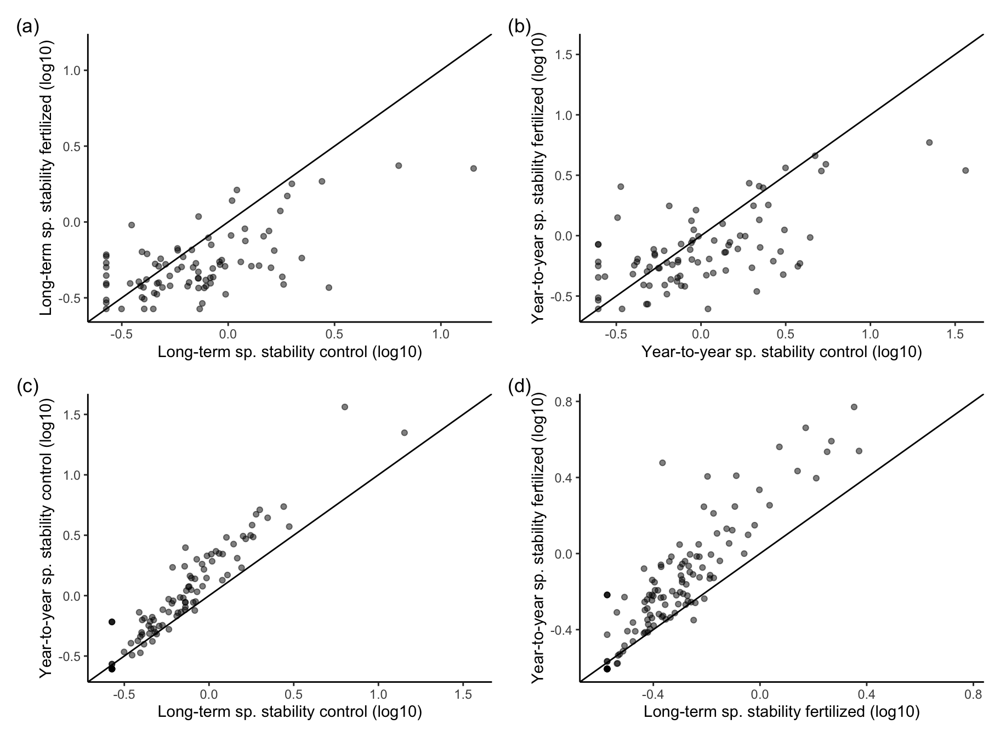
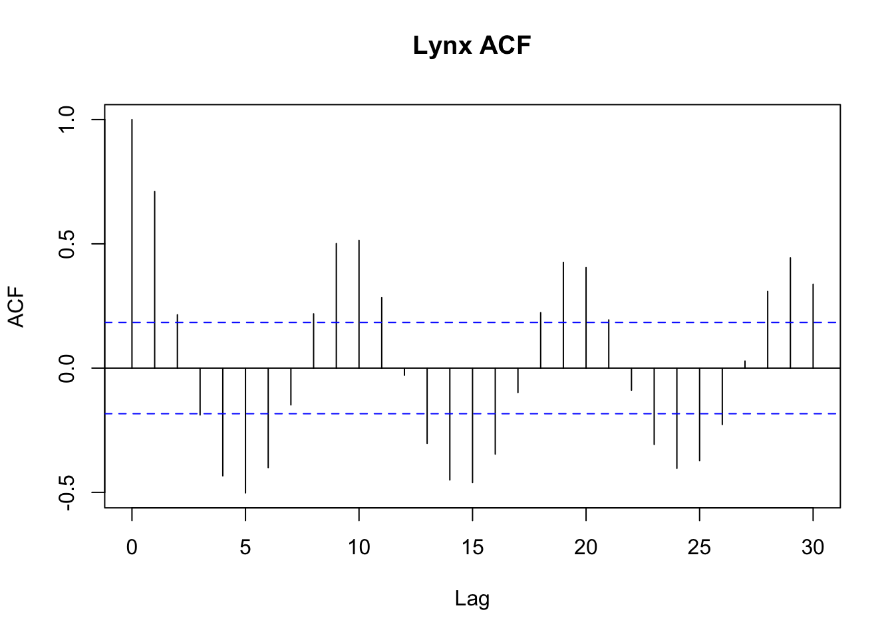
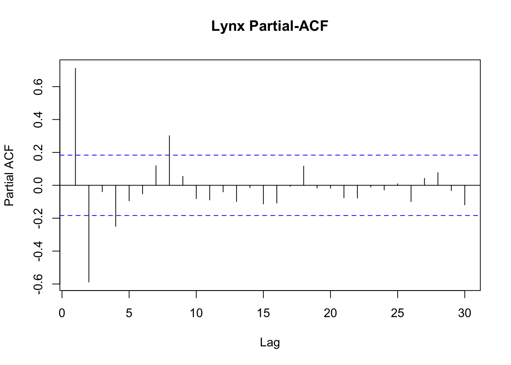

Continue with your attempt to reproduce part of a paper from archived data from the first practical. Archive the code and text on GitHub and include the link to your repo in your answer here.
Make at least two commits to git.
Cite the original paper and data.
Make your reproduction as reproducible as possible (i.e. it should be possible for me to reproduce your work after cloning your repo and downloading the data).
Paper used for plot reproduction from DRYAD: “Long-term and year-to-year stability and its drivers in a Mediterranean grassland” Valerio et al. (2022) DOI: 10.1111/1365-2745.13861
See author’s corresponding data-set: datasheet.xlsx
Figure 3 was recreated from the paper and code written below:
path <- here::here("Reproduce-Part A")setwd(path)# Set the file path to get data fname <-"datasheet.xlsx"# Read the excel worksheet 3data <- readxl::read_xlsx(fname, sheet =3)# Tidy data for plottingtdata <- data |> dplyr::filter(!(longterm_stab=="NA"& yeartoyear_stab=="NA")) |> dplyr::select(Species,longterm_stab,yeartoyear_stab,treatmentext) |> tidyr::pivot_longer(cols=c(longterm_stab,yeartoyear_stab),names_to ="variable") |> dplyr::mutate(variable=case_match(variable,"longterm_stab"~"Long-term","yeartoyear_stab"~"Year-to-year"),axistitle=paste(variable,"sp. stability",treatmentext,"(log10)"),value =log10(as.numeric(value)))# Create separate df's with cols: subplot, x, ya <-filter(.data=tdata,all(c("control","fertilized")%in%treatmentext),.by=Species) |>summarise(subplot ="a",x = value[treatmentext=="control"& variable=="Long-term"],xlab = axistitle[treatmentext=="control"& variable=="Long-term"],y = value[treatmentext=="fertilized"& variable=="Long-term"],ylab = axistitle[treatmentext=="fertilized"& variable=="Long-term"],.by = Species)b <-filter(.data=tdata,all(c("control","fertilized")%in%treatmentext),.by=Species) |>summarise(subplot ="b",x = value[treatmentext=="control"& variable=="Year-to-year"],xlab = axistitle[treatmentext=="control"& variable=="Year-to-year"],y = value[treatmentext=="fertilized"& variable=="Year-to-year"],ylab = axistitle[treatmentext=="fertilized"& variable=="Year-to-year"],.by = Species)c <-filter(.data=tdata,all(c("Long-term","Year-to-year")%in%variable),.by=Species) |>summarise(subplot ="c",x = value[treatmentext=="control"& variable=="Long-term"],xlab = axistitle[treatmentext=="control"& variable=="Long-term"],y = value[treatmentext=="control"& variable=="Year-to-year"],ylab = axistitle[treatmentext=="control"& variable=="Year-to-year"],.by = Species)
Warning: Returning more (or less) than 1 row per `summarise()` group was deprecated in
dplyr 1.1.0.
ℹ Please use `reframe()` instead.
ℹ When switching from `summarise()` to `reframe()`, remember that `reframe()`
always returns an ungrouped data frame and adjust accordingly.
Warning: Returning more (or less) than 1 row per `summarise()` group was deprecated in
dplyr 1.1.0.
ℹ Please use `reframe()` instead.
ℹ When switching from `summarise()` to `reframe()`, remember that `reframe()`
always returns an ungrouped data frame and adjust accordingly.
# Reproduce plotpfun <-function(z) ggplot(z) +geom_point(aes(x=x,y=y),alpha=0.5) +labs(x=z$xlab, y=z$ylab) +geom_abline(slope=1, intercept=0) +theme_classic() +xlim(range(z$x,z$y)) +ylim(range(z$x,z$y))aplot <- a |>pfun()bplot <- b |>pfun()cplot <- c |>pfun()dplot <- d |>pfun()aplot + bplot + cplot + dplot +plot_annotation(tag_levels ='a',tag_prefix ="(", tag_suffix =")")

Discuss how well you managed to reproduce the part of paper you were working on and what challenges you faced. If you looked at two papers discuss both.
The data-set I selected was easy to work with. Reading the paper enabled me to understand the names of the abbreviated column titles. It did take time to understand the relationships with the data which translated to challenges in code development to replicate plots. A text file was paired with the excel (.xlsx) file download which further explained in depth what each of the three sheets contained. Luckily there were no issues with obscure packages needed, or outside editing (such as in inkscape or ppt to finalize figures). Further, the readme.txt file stated that there were corresponding R files containing code for each statistical interpretation but I was unable to locate these files on DRYAD.
Discuss what how well the original paper meets best practice for reproducibility, i.e. what should the authors have done to make their analysis more reproducible, and what they did well.
The authors were clear in the methods they used, plots were able to be replicated suggesting that there was no indication of hand-cleaned data. I can only assume that the data-set attached with the paper is true and there was no misconduct (non-zero probability exhibited). Additionally, naming conventions were intuitive and concise yet meaningful. I believe the authors made an well informed documentation of their available open source data. I would be interested to see how they optimized their archived code for an open source environment (if packrat or renv was used as an effort to bring project-local R dependency management to their project in an effort to increase predictability utilizing a private package library).
Part B data analysis
A colleague is testing the effect of a treatment on fish growth. They have ten tanks (five for each treatment). Each tank with ten fish. They plan to fit the model: lm(growth ~ treatment, data = fish_data)
What is wrong with this plan?
Fish growth can be dependent on the tank effect, whereby creating a dependence of the individual fish. The Gaussian normality should be seen in the distribution of the response variable (growth). Linear models typically assume that the response variable exhibits a Normal (Gaussian) distribution. The Gaussian assumption about normality states that individuals in the sample are independently and identically distributed where each one is a separate entity and not related to the other.
The tank effect is consistent with a hidden structure within the data set. Here individuals grouped in each tank show a growth dependency specific to each tank (individuals are NOT independent). This creates a pattern in the data (environmental groupings within the experiment). This violation of independence can lead to a bias in the estimates and falsely make inferences about the population.
With mixed effects regression models, we can mathematically account for the structure of the variability in the data and better estimate the actual population mean. mixed effects models are a type of hierarchical model (nested model structure and focuses on means of means) which helps interpret data with grouped observations with one target variable (growth). Here, each tank has its own mean and all tanks together have a population mean where the means are weighted accordingly. This hierarchical structure approach implies that there are several levels of data variability and strengthens the estimation of the standard errors. This is different from a simple linear regression because it takes account for groupings but also treats all of the observations as mutually independent. Further we could employ a Laplace approximation to approximate the posterior distribution of model parameters. This would be dependent on the shape of the distribution and the proximity of the model to the true posterior. Even further, Marcov Chain Monte Carlo techniques may prove to be a better technique. In short a mixed effect model is most appropriate for this problem because of the nested tank effects to more appropriately address correlation among groped fish in tanks, more adequately model the hierarchical structure of the data, and provide a much more reliable statistical inferences.
Show, by simulation, the problems with this model for these data.
set.seed(9824752)A <-10B <-15sd1 <-3# Tank SDsd2 <-1# Individual SD within each tank# Means for each tanktanksA <-rnorm(5,A,sd=sd1)tanksB <-rnorm(5,B,sd=sd1)# Individual values within each tankindA <-rnorm(10*5,rep(tanksA,each=10),sd=sd2)indB <-rnorm(10*5,rep(tanksB,each=10),sd=sd2)# Combined histogramplot(density(c(indA,indB)))
# Fit model & diagnosticsfish_data <-data.frame(treatment =rep(c("A","B"),each=50),tank =rep(1:10,each=10),growth =c(indA,indB))fishfit <-lm(growth ~ treatment, data = fish_data)summary(fishfit)
Call:
lm(formula = growth ~ treatment, data = fish_data)
Residuals:
Min 1Q Median 3Q Max
-5.2645 -2.0982 -0.2887 1.7877 6.5010
Coefficients:
Estimate Std. Error t value Pr(>|t|)
(Intercept) 12.3811 0.4007 30.900 <2e-16 ***
treatmentB 5.6558 0.5666 9.981 <2e-16 ***
---
Signif. codes: 0 '***' 0.001 '**' 0.01 '*' 0.05 '.' 0.1 ' ' 1
Residual standard error: 2.833 on 98 degrees of freedom
Multiple R-squared: 0.5041, Adjusted R-squared: 0.4991
F-statistic: 99.62 on 1 and 98 DF, p-value: < 2.2e-16
Suggest a better model and show that it performs better.
# Better model: mixed effect lm with fixed effect of treatment and random intercept by tankfishfit2 <- lme4::lmer(growth ~ treatment + (1| tank), data = fish_data)summary(fishfit2)
Linear mixed model fit by REML ['lmerMod']
Formula: growth ~ treatment + (1 | tank)
Data: fish_data
REML criterion at convergence: 335.2
Scaled residuals:
Min 1Q Median 3Q Max
-2.09393 -0.68184 0.04574 0.56155 1.98509
Random effects:
Groups Name Variance Std.Dev.
tank (Intercept) 8.407 2.900
Residual 1.164 1.079
Number of obs: 100, groups: tank, 10
Fixed effects:
Estimate Std. Error t value
(Intercept) 12.381 1.306 9.483
treatmentB 5.656 1.846 3.063
Correlation of Fixed Effects:
(Intr)
treatmentB -0.707
“The effect size was small (r = 0.124). However artificially amplifying the sample by a factor of two (from n = 54 to n = 108) yielded a significant result (p = 0.043) suggesting that a future larger study might be able to detect a positive benefit for [our treatment].”
What advice do you give the authors?
The authors should consider how artificially amplifying their sample size and obtaining a significant result could contribute to a Type 1 error inflation. In this process an incorrect rejection of a null hypothesis can occur when it is actually true. Specifically in hypothesis testing, an artificially inflated sample size may increase the statistical power and the likelihood of getting a significant result. This artificially inflated sample may not be the best representation of the actual population (likely introducing bias and inflating the opportunity of a Type 1 error). The author should note that with respect to hypothesis testing, a lower significance level indicates a lower tolerance of Type 1 errors. The author should evaluate the potential for Type 1 error inflation and consider thee need for replication in a naturally recruited experiment to validate the findings (and best reflect the actual population). This will reduce the risk of making false positive conclusions.
Additionally, there is a risk of incorporating Type II error whereby reducing the statistical power of the study (with increasing the sample size). Here, the null hypothesis is NOT rejected even though it is in act false and the author would fail to detect a true effect.The relationship between the variables/treatment effect is weak based on the effect size being small. Even though the artificially amplified sample size yields significance, it’s still possible that this result is a false negative and fails to accurately reflect a true positive effect.
The author should not place too much weight of their p value significance based on their small effect size. It’s important to interpret the findings critically and review how the experiment may have failed detection of a positive influence of the treatment due to the small effect size and sample size (and practical application of treatment). The author again should conduct a larger study (without artificially increasing sample size) with proper statistical power to reduce limitations and biases, best reflect the true population, and eliminate the chance of both Type I and Type II error.
The lynx data (available with-in R) show the number of lynx (norsk: gaupe) trapped in Canada in 1821-1934. Plot the data then examine the acf and pacf for these data. What can you infer from these about the type of autocorrelation in these data?
# Create a timeseries of the Lynx dataset starting from 1821 and ending in 1934data(lynx); trapped_lynx <- lynx#we can see that this dataset is a timeseries 'ts'class(trapped_lynx)
[1] "ts"
#checking the dimensions of the timeseries (vector)tsp(trapped_lynx)
[1] 1821 1934 1
#check length of dataset (114 values)length(trapped_lynx)
[1] 114
#plotting a histogram of the data for distribution patternshist(trapped_lynx)
#fit a linear model to see if we get a pattern as a function of timetrapped.ts <-time(trapped_lynx)#fit model trapped.lm <-lm(trapped_lynx ~ trapped.ts)# summarize data# from the summary stats, the model estimates that average trappings increased roughly 3.30 lynx per yearsummary(trapped.lm)
Call:
lm(formula = trapped_lynx ~ trapped.ts)
Residuals:
Min 1Q Median 3Q Max
-1594 -1211 -755 1032 5366
Coefficients:
Estimate Std. Error t value Pr(>|t|)
(Intercept) -4630.034 8493.112 -0.545 0.587
trapped.ts 3.285 4.523 0.726 0.469
Residual standard error: 1589 on 112 degrees of freedom
Multiple R-squared: 0.004689, Adjusted R-squared: -0.004198
F-statistic: 0.5276 on 1 and 112 DF, p-value: 0.4691
# create a plot that includes moving averages (5-10yr) to see cyclical interactionsm_avg10 <- stats::filter(x=trapped_lynx, filter=rep(x=1/10,times=10), sides=2)m_avg9 <- stats::filter(x=trapped_lynx, filter=rep(x=1/9,times=9), sides=2)m_avg8 <- stats::filter(x=trapped_lynx, filter=rep(x=1/8,times=8), sides=2)m_avg7 <- stats::filter(x=trapped_lynx, filter=rep(x=1/7,times=7), sides=2)m_avg6 <- stats::filter(x=trapped_lynx, filter=rep(x=1/6,times=6), sides=2)m_avg5 <- stats::filter(x=trapped_lynx, filter=rep(x=1/5,times=5), sides=2)# visually looking at the moving averages plotted, the natural cycle may be between 8 years longplot(trapped_lynx,col="grey", ylab ="Number of Lynx Trapped", xlab ="Year")lines(m_avg10,col="red",lwd=2)lines(m_avg9,col="orange",lwd=2)lines(m_avg8,col="yellow",lwd=2)lines(m_avg7,col="green",lwd=2)lines(m_avg6,col="blue",lwd=2)lines(m_avg5,col="purple",lwd=2)legend("topright", c(" 5-Year Moving Average", " 6-Year Moving Average", " 7-Year Moving Average", "8-Year Moving Average", " 9-Year Moving Average", "10-Year Moving Average"), bty ="n", col =c( "purple", "blue", "green", "yellow", "orange", "red"), pch =15)abline(trapped.lm, col="black",lwd=2, lty="dashed")
# next we need to evaluate the autocorrelation using the ACF and PACF# Calculate the ACF and PACFacf_output <-acf(trapped_lynx, lag.max =30, plot=FALSE)pacf_output <-pacf(trapped_lynx, lag.max =30, plot=FALSE)# Plot the ACF-- to measure correlation between the ts and corresponding values at different time lagsplot(acf_output, main ="Lynx ACF")

# Strong cyclic pattern, repeats every 8 years (repeating on the positive side again)# Shows us the strength and direction of the linear relationship between the obs and their corresponding lagged values (withOUT removing the effect of the intervening lags-- dependency from last year to current)# dashed blue line is the significance level# Exponential decline occurs pointing data to be a first order auto-regressive process# we can see the cyclical patterns in the ACF plot which suggest strong autocorrelation present#this is indicative of the dependency of current year linx population is determinate of the previous year population values# Plot the PACFplot(pacf_output, main ="Lynx Partial-ACF")

# removes the dependence from last years values and shows where correlation is the strongest (year-8)# supports that lag(8) years in the past is similar to current value (8-year cycle).# focuses on correlation between obs separated by a SPECIFIC lag (whereby eliminating dependency/influence of other # intermediate lags which aids to identify direct influence).#dashed blue line is the significance level
Chironomid species richness has been recorded in some Norwegian lakes. Three predictor variables are available, water temperature, depth and pH. We want to test the hypothesis that species richness is related to temperature. The data are in the file chironomid.txt.
What distribution could be assumed for the response variable?
path <- here::here()setwd(path)# Set and read filefname <-"chironomid.txt"data <-read.table(fname, header =TRUE)# Convert it into a dataframedata <-as.data.frame(data)### What distribution could be assumed for the response variable?# First, plot distribution of noSpeciesplot(density(data$noSpecies))
The Response variable in this study is Species Richness (noSpecies), which corresponds to the count of species. Since we are utilizing count data, Poisson distribution could be assumed for this species richness response variable. Poisson distribution assumes independence which implies that the presence or absence of one species does not influence the presence or absence of another species. This assumption aligns well with ecologic principles where cohabitation of species typically occupy distinct ecological niches to minimize competition but many species exist within the same habitat.
What type of analysis is appropriate?
An appropriate analysis when working with Poisson Distribution is often the generalized linear models (GLMs) with a poisson link function (to create a Poisson regression model). Here we can model the relationship between a response variable (noSpecies, as count data) and one or more of the explanatory variables (depth, temperature, pH) while accounting for Poisson distribution and assuming a log-linear relationship between both the predictor variables and the expected count. We can further utilize various model diagnostics and hypothesis testing to determine the goodness of fit and further assess the significance of the predictors.
Fit an appropriate parametric model to test the hypothesis.
fit1 <-glm(noSpecies ~ depth + temperature + pH, family =poisson(), data)summary(fit1)
Call:
glm(formula = noSpecies ~ depth + temperature + pH, family = poisson(),
data = data)
Coefficients:
Estimate Std. Error z value Pr(>|z|)
(Intercept) 2.736714 0.191136 14.318 <2e-16 ***
depth 0.001959 0.002978 0.658 0.5105
temperature 0.059854 0.003465 17.272 <2e-16 ***
pH -0.060761 0.026213 -2.318 0.0205 *
---
Signif. codes: 0 '***' 0.001 '**' 0.01 '*' 0.05 '.' 0.1 ' ' 1
(Dispersion parameter for poisson family taken to be 1)
Null deviance: 802.65 on 156 degrees of freedom
Residual deviance: 410.41 on 153 degrees of freedom
AIC: 1182.1
Number of Fisher Scoring iterations: 4
Check the model diagnostics. Justify any changes you need to make to the model.
# Check normality of residuals using QQ plot#Here we use the quantile-quantile plot to visually interpret if the distribution of the observed data matches#our expected distribution. More specifically, the QQ plot uses the observed data quantiles against those of the #theoretical distribution. It is optimal that the points lie close to the qqline (representing close conformity to#the expected distribution). Alternatively, where deviations occur, we will need to further investigate for skewness#heavy tails or outliers.qqnorm(res1)qqline(res1)
# Check influence of observations (outliers) # Using Cooks distance, we can identify influential observations that may contribute towards a significant impact on the #regression analysis/model's results (and also identify possible outliers).plot(cooks.distance(fit1),type="h")
Our Residuals VS Fit are not good, but the normality looks OK. We can see there are some influential points. We will employ an alternative model to see if we can get a better fit and if we see any variation in current pattern.
# Model 2: Try identity link in poisson (default is log) # Adding the Poisson identity link may help us if there is a strong linear relationship between the predictors vs expected# count. Also when employing the identity link, the coefficients in the GLM represent the change in the expected count as a #1-unit increase (vs log link with coefficients representing multiplicative effects) in predictor variable.fit2 <- fit1 <-glm(noSpecies ~ depth + temperature + pH, family =poisson(link="identity"), data)summary(fit2)
Call:
glm(formula = noSpecies ~ depth + temperature + pH, family = poisson(link = "identity"),
data = data)
Coefficients:
Estimate Std. Error z value Pr(>|z|)
(Intercept) 16.52926 3.78462 4.367 1.26e-05 ***
depth 0.03069 0.05749 0.534 0.593
temperature 1.64932 0.07261 22.715 < 2e-16 ***
pH -2.14653 0.51333 -4.182 2.90e-05 ***
---
Signif. codes: 0 '***' 0.001 '**' 0.01 '*' 0.05 '.' 0.1 ' ' 1
(Dispersion parameter for poisson family taken to be 1)
Null deviance: 802.65 on 156 degrees of freedom
Residual deviance: 334.29 on 153 degrees of freedom
AIC: 1106
Number of Fisher Scoring iterations: 9
Interpretation: Maybe improvement in residuals VS fit, pattern still seen. Go with fit2 for now (not great, but less bad than fit1). Next step would be to employ a GAMM model which captures non-linearity (understanding of non-linear relationships specifically in temperature data- depth did not have a significant effect). Unfortunately, GAMM models do not capture mechanistic understanding or prediction/extrapolating specifically out of sample prediction. I also tried the quasi-Poisson regression with no increase in fit and I don’t think the negative binomial regression would prove to be a better model either.Since we do not have a magnitude of zeros in our count data, using a zero-inflated Poisson regression is also not useful in understanding excess variability in our count data.
Predict species richness at -5, 5, and 30°C and show the 95% confidence intervals.
# Without values for other potential predictors, assume mean in datapred <-predict(fit2,data.frame(temperature=c(-5,5,30), depth=rep(mean(data$depth),3), pH=rep(mean(data$pH),3)),se.fit=TRUE)# Compute confidence intervals from SE for each predictionpred <-data.frame(temp =c(-5,5,30),spct.pred = pred$fit,spct.l95 = pred$fit - pred$se.fit*1.96,spct.u95 = pred$fit + pred$se.fit*1.96)
Present the results using both graphs and tables.
### Present the results using both graphs and tables.ggplot(pred,aes(x=temp,y=spct.pred)) +geom_point(data=data,aes(x=temperature,y=noSpecies),colour="grey",alpha=0.5) +geom_pointrange(aes(ymin=spct.l95,ymax=spct.u95),size=0.3) +xlab("Temperature (C)") +ylab("Predicted species count") +theme_test()
knitr::kable(pred,col.names =c("Temperaturee (C)","Predicted species count","Lower 95% CI species count","Upper 95% CI species count"))
Temperaturee (C)
Predicted species count
Lower 95% CI species count
Upper 95% CI species count
-5
-5.192134
-7.519161
-2.865108
5
11.301104
10.237545
12.364664
30
52.534201
49.680524
55.387878
Write a biological interpretation of your model.
A positive relationship is observed between species richness (noSpecies) and temperature. Reading Lencioni et al. 2010 ‘Chironomid (Diptera: Chironomidae) communities in six European glacier-fed streams’ states that there was a prominent difference in taxonomic richness between the Alpine and the northern European regions, with a higher number of taxa in the south (where warmer water temperatures persist). Warmer temperatures may contribute to the expansion of habitat suitability and lead to increases in species richness. Enhancement in the metabolic rates and raster development maybe observed with warmer temperatures which may contribute to increased species richness by means of development/reproduction rate increase changing life-cycle duration and promote species overlap. Shifts in species distributions with higher water temperatures can lead to spatio-temporal shifts in species richness. As cooler environments warm, more temperate climate species may be seen in arctic environments as those habitats become more survivable. https://doi.org/10.1046/j.1365-2427.2001.00859.x
Instructions
Write in a quarto document and submit the rendered version. Make sure that any figures are included in you submission.